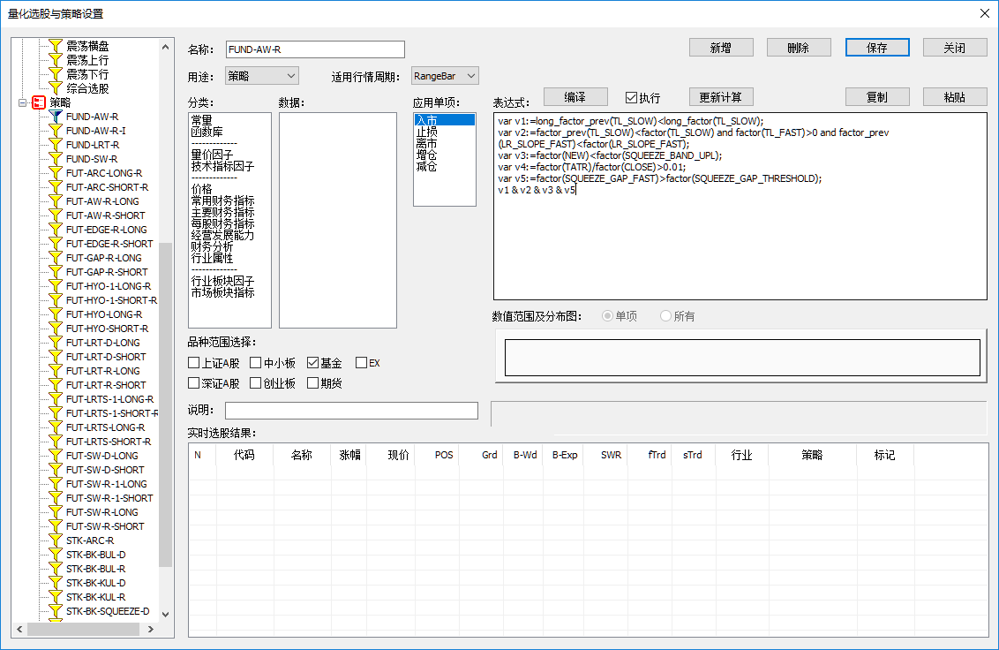

期货策略模拟交易¶
第一步是设置好投资组合和期货策略，通常是多头和空头一对策略。然后绑定投资组合，设置交易合约，配置策略参数，即可运行。
期货组合设置¶
点击菜单“数据”->“组合管理”，弹出对话框，如下图：

- 在【组合类型】选项中，选择“期货”。
- 在【本金（份额）】选项中，设置起始本金。
- 在【交易账户】选项中，必须选择“Simulation”。
期货策略设置¶
点击菜单“数据”->“选股&策略编辑管理”，弹出对话框，如下图：

点开左侧策略图标，展开树目录，会看到已有的交易策略，可以新增交易策略。选股在“用途”设置项必须设置成“策略”。
期货策略通常是由一个多头策略和一个空头策略组成，当然只设置其中一个也可以。
下面是一些期货策略的JSON格式数据：
- FUT-AW-R-LONG
{ "barsize" : 6, "expr0" : "(entry_signal(td_long,ent_lrs_fast) or entry_signal(td_long,ent_hyo_over)) and factor(TATR)/factor(CLOSE)>0.0025 and trend_level(fd_main,tl_stddev)>=2 and factor(TL_FAST)>0", "expr1" : "(trend_level(fd_main,tl_stddev)<=2 and stop_profit(td_long, sp_trace,0.5)) or (trend_level(fd_main,tl_stddev)>2 and stop_profit(td_long,sp_maxdown,1)) or stop_loss(td_long,sl_mult_stddev,3)", "expr2" : "(trend_level(fd_main,tl_stddev)<=2 and exit_signal(td_long, ext_lrs_fast)) or (trend_level(fd_main,tl_stddev)>2 and exit_signal(td_long, ext_hyo_cross))", "expr3" : "", "expr4" : "", "group" : 80, "id" : "00180403222144000", "name" : "FUT-AW-R-LONG", "remark" : "", "used" : "策略" }
- FUT-AW-R-SHORT
{ "barsize" : 6, "expr0" : "(entry_signal(td_short,ent_lrs_fast) or entry_signal(td_short,ent_hyo_over)) and factor(TATR)/factor(CLOSE)>0.0025 and trend_level(fd_main,tl_stddev)>=2 and factor(TL_FAST)<0", "expr1" : "(trend_level(fd_main,tl_stddev)<=2 and stop_profit(td_short, sp_trace,0.5)) or (trend_level(fd_main,tl_stddev)>2 and stop_profit(td_short,sp_maxdown,1)) or stop_loss(td_short,sl_mult_stddev,3)", "expr2" : "(trend_level(fd_main,tl_stddev)<=2 and exit_signal(td_short, ext_lrs_fast)) or (trend_level(fd_main,tl_stddev)>2 and exit_signal(td_short, ext_hyo_cross))", "expr3" : "", "expr4" : "", "group" : 80, "id" : "00180403222300001", "name" : "FUT-AW-R-SHORT", "remark" : "", "used" : "策略" }
期货策略管理¶
点击主窗口上方的【实时交易】页面选卡，显示如下界面：
然后，再点击右上方的【配置】按钮，弹出“期货策略管理”对话框，如下图所示：
- 在【投资组合】选项中，选择之前配置好的组合。
- 在【运行模式】选项中，选择实盘。
- 在【多头策略】选项中，选择之前设置好的多头期货策略。
- 在【空头策略】选项中，选择之前设置好的空头期货策略。
- 在【多头策略】选项中，选择之前设置好的多头期货策略。
- 在对话框左下侧显示了当前主力期货列表，通过双节，可以选入右下方列表，作为策略交易目标合约。
做好其他参数的设置，然后保存设置即可。